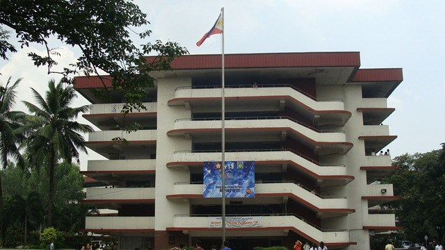

Where isko and iska reside. The core infrastructure of PUP. It is divided into four wings. The PUP Main Academic Building serves as a central hub for academic life at the university, designed to facilitate both formal education and student engagement while promoting a functional, safe, and welcoming environment for learning.